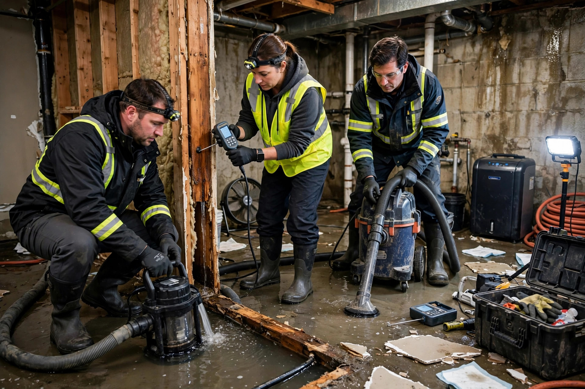

Water Damage Restoration in Nampa, ID
Extraction is only the first hour. Real restoration carries the job all the way through — drying, demolition, mold prevention, and rebuilding — until the room looks like the water was never there.
Why it happens in Nampa
Nampa's water problems have their own fingerprint. Knowing the usual suspects helps you spot trouble early — and helps us know where to look first.
Lake Lowell and canal seepage
Homes near Lake Lowell and Canyon County irrigation laterals can see shallow groundwater press against foundations during irrigation season, keeping basements damp long after the surface looks dry.
Downtown's aging plumbing
Older homes around downtown Nampa still run on supply lines installed decades ago. Galvanized pipe corrodes from the inside out, and a pinhole leak inside a wall can run for weeks before anyone notices.
Freeze-thaw pipe splits
Hard winter cold snaps split supply lines in unheated garages, crawlspaces, and exterior walls. The break often happens in January but isn't found until the thaw.
Grading and runoff
Lots that slope toward the house funnel every storm straight at the foundation. In newer subdivisions around Midland, rushed grading leaves low spots that pond against the slab.
Appliance failures
Washer supply hoses, water heater tanks, and dishwasher lines give out with no warning. A burst washer hose can release hundreds of gallons while you're at work.
Roof and flashing wear
Valley wind and summer heat age shingles and flashing fast. A compromised valley or chimney flashing lets storm water ride down inside the wall, showing up as a ceiling stain rooms away from the entry point.
Related services
Water Extraction
Standing water pulled out fast with truck-mounted equipment — the emergency first response.
Learn more →Flooded Basement Cleanup
Pump-out, drying, and salvage when a Nampa basement takes on water.
Learn more →Ceiling Leak Repair
Finding the source above the stain, then repairing the ceiling properly.
Learn more →Water Damaged Drywall Repair
Flood cuts, cavity drying, and rebuild after drywall gets wet.
Learn more →What restoration actually involves
A lot of companies stop at pumping water out. Restoration means finishing the job: every phase below happens in order, and skipping one is how a "fixed" room ends up with warped floors or mold six months later.
Emergency extraction
Standing water comes out first with truck-mounted or portable extractors. Every hour it sits, it migrates deeper into subfloor and wall cavities — so this starts on arrival, not next week.
Moisture mapping
Meters and thermal imaging trace where water traveled, including places that look dry. The map decides what gets dried in place and what has to come out.
Structural drying
Air movers and commercial dehumidifiers run for days, with moisture readings checked on a schedule. The equipment stays until the numbers say dry, not until the surface looks it.
Demolition of what can't be saved
Saturated drywall, insulation, swollen particle board, and delaminated flooring get removed with clean flood cuts. What can genuinely be dried stays; what can't goes.
Cleaning and mold prevention
Exposed framing and cavities get cleaned and treated with antimicrobial products. The EPA notes that mold can begin growing on damp surfaces quickly — which is why drying speed matters as much as thoroughness.
Rebuild to pre-loss condition
New drywall, insulation, flooring, trim, and paint go back in. The goal is simple: when the crew leaves, the room should look like the water never happened — not like a patch job.
Common questions, straight answers
How is restoration different from just water extraction?
Extraction removes standing water — that's one visit. Restoration is the complete job: extraction plus moisture mapping, structural drying, removal of unsalvageable material, antimicrobial treatment, and rebuilding.
How long does a full restoration take in a Nampa home?
A single-room incident with quick extraction can wrap in about a week. Multi-room jobs with demolition and rebuild run two to four weeks. Drying can't be rushed — rebuilding over damp framing guarantees problems.
Will you have to tear out my drywall?
Only the drywall that can't be saved. If water wicked up past what drying can reach, a clean flood cut removes the damaged section so the cavity behind it can dry. Drywall that stayed dry, or got only surface-wet and dried quickly, stays put. The moisture map makes the call, not guesswork.
Does homeowners insurance cover water damage restoration in Idaho?
Sudden and accidental damage — burst pipes, appliance failures, storm-driven leaks — is typically covered under standard homeowners policies, though every policy has its own exclusions. Gradual damage from long-term leaks usually isn't. Document everything with photos and call your insurer early.
How do you keep mold from growing while everything dries?
Speed first: the faster materials dry, the less opportunity mold has. Then antimicrobial treatment on exposed framing and cavities. The CDC notes that controlling moisture is the key to controlling mold indoors — so the drying plan is really a mold prevention plan at the same time.
A Nampa family returns from a weekend trip to find the garage water heater has been leaking — water has crossed under the wall into the adjacent bedroom, soaking carpet and drywall. Restoration means extracting the water, pulling carpet and pad, cutting damaged drywall, drying the cavity and slab for days, treating the framing, then rebuilding.
Half-done water damage gets expensive
Every skipped step becomes a bigger bill later. Call and get the whole job handled in order.